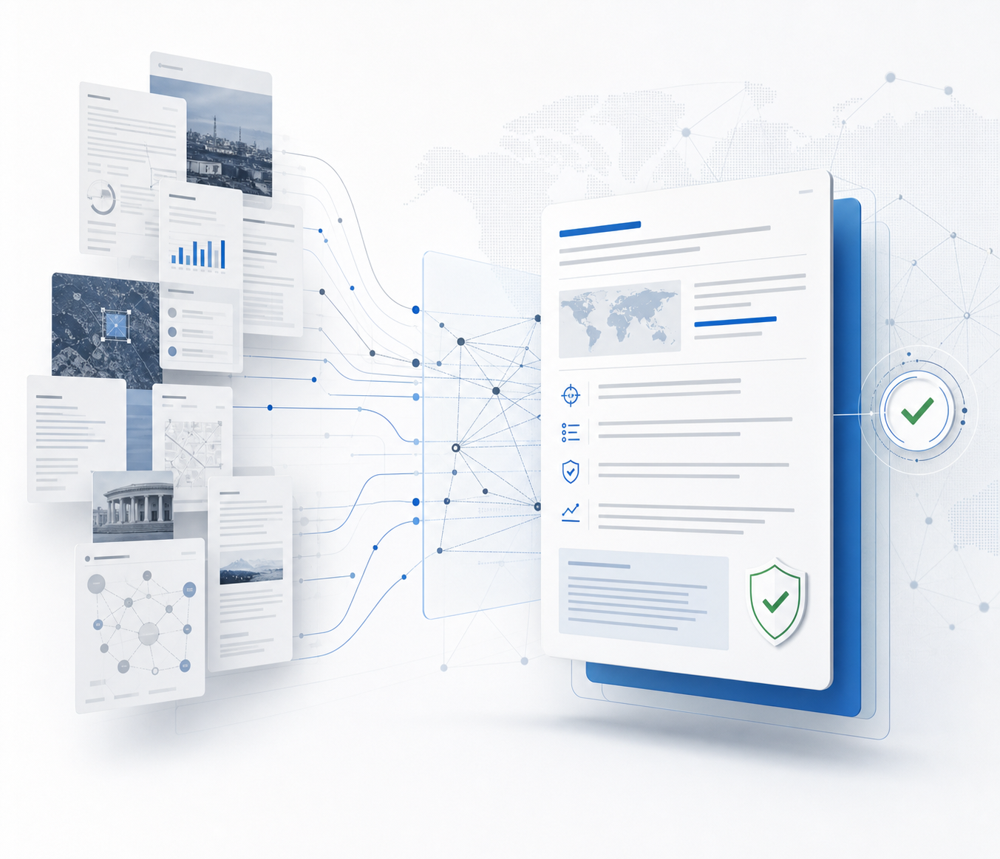

PUBLIC-RECORD INTELLIGENCE
Decisions you can trace back to evidence.
ARIA brings due diligence, sanctions screening, procurement and open-source research into a single intelligence workflow. Every finding carries the sources behind it, the confidence it warrants and the limits of what the evidence can show.
Intelligence that shows its working.
ARIA is built for teams that need more than an answer. Each workflow is designed to preserve the evidence, context and uncertainty behind the conclusion.
Evidence-led due diligence
Bring counterparty findings, ownership context and public-record checks into a structured review.
Sanctions & PEP screening
Review relevant watchlist and exposure signals without hiding ambiguous matches or missing context.
Procurement intelligence
Surface tenders, awards and market signals from public procurement sources in one research flow.
Continuous monitoring
Keep priority entities and developments visible as new public information enters the picture.
Source-aware research
Separate strong evidence from weak signals and preserve source links for independent review.
Decision-ready reporting
Turn a complex evidence set into a clear brief with findings, caveats and next actions.
-
One evidence workspace
Keep research, uploaded context, findings and follow-up questions together instead of scattered across tools.
-
Explicit confidence
ARIA is designed to distinguish what the evidence supports, what remains uncertain and what requires verification.
-
Human judgement stays in control
Use ARIA to accelerate research and structure decisions, not to replace accountable review.

Reliable intelligence starts with an inspectable method.
ARIA keeps the route from source to finding visible. When evidence is incomplete, the responsible answer is a qualified one, never invented certainty.
Read the model cardTHE ARIA METHOD
A disciplined path from open source to informed decision
The workflow is intentionally simple to inspect and repeat.
1
Collect relevant evidence
2
Cross-check entities & claims
3
Qualify confidence & gaps
4
Deliver for human review
Trust is a product behaviour, not a slogan.
ARIA’s credibility rests on three commitments that can be inspected in the work itself.
“Evidence before assertion.”
A material finding should be connected to the source that supports it, so another person can review the basis.
“Uncertainty stays visible.”
Incomplete, conflicting or low-confidence evidence should narrow the conclusion rather than disappear behind polished language.
“Judgement remains accountable.”
ARIA supports consequential research and review. The responsible person retains the final decision and its context.
Choose the depth your team needs.
Start free to evaluate the workflow, then move to a plan built for regular professional use.
Essentials
For focused research and due diligence
per month
200 messages per day
20 DD runs / month
5 MB document uploads
Pro Intel
For high-volume intelligence teams
per month
2,000 messages per day
100 DD runs / month
50 MB document uploads
Prefer to explore first? Create a free account with no credit card.